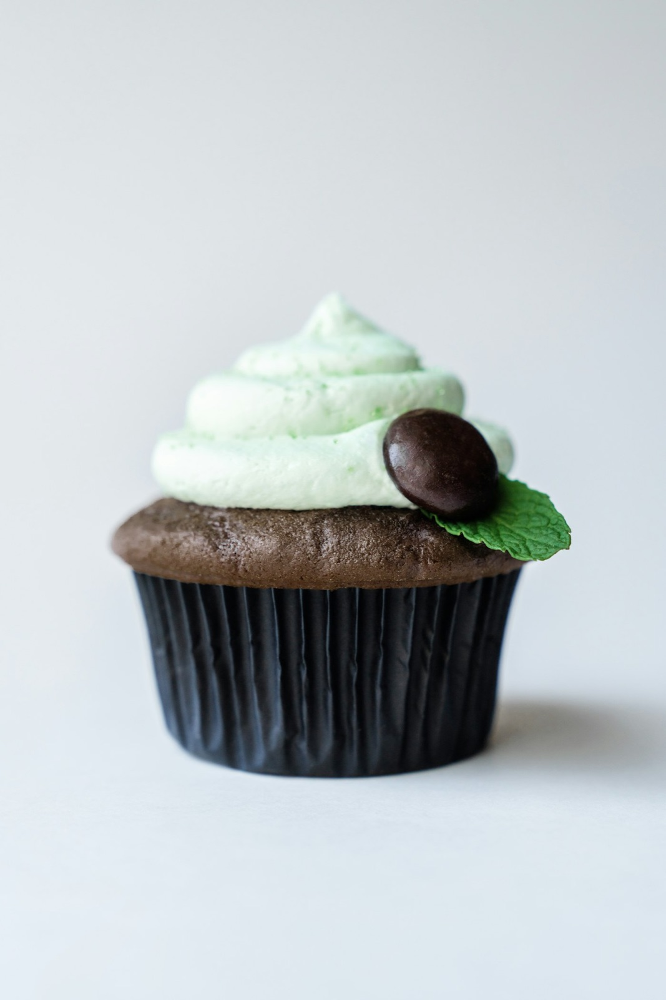

( Поради кондитера · історії · шпаргалки )
ЖурналMariday
Усе, що ми розповідаємо клієнтам у Direct, — зібрали в статті. Як порахувати вагу, довезти ярус цілим, обрати начинку й не загубитися в підготовці до весілля.
- 6статей-
шпаргалок - 4–8хвилин
на читання - 30ідей для
напису на бенто
 MARIDAY
MARIDAY

( 01 ) Головне

Скільки кілограмів торта потрібно на свято
Головне питання в нашому Direct. Розбираємося з нормою 150–200 г на гостя, ярусами, дитячими порціями й тим, як candy bar змінює розрахунок. З таблицею й калькулятором.
Читати статтю →( 02 ) Усі статті
Читайте перед святом
Кожна стаття — відповідь на питання, яке нам ставлять найчастіше. Зберігайте в закладки й діліться з тими, хто організовує свято разом з вами.
ПорадиСкільки кілограмів торта потрібно
Норма на гостя, яруси, діти й candy bar — з таблицею для свят від 6 до 150 гостей.
Читати → Поради
ПорадиЯк зберігати, перевозити й подавати торт
Від машини до тарілки: температура, час на столі, як різати ярусний торт і що робити із залишками.
Читати → Смаки
СмакиЯк обрати начинку: гід по 9 смаках
Для дітей і дорослих, для весілля й офісу, для ласунів і тих, хто «не любить солодке».
Читати → Свята
СвятаCandy bar: солодкий стіл, який з'їдять
Скільки десертів брати, як підібрати палітру й висоти, де поставити стіл і чого уникати.
Читати → Весілля
ВесілляЧек-лист весільного торта
Інтерактивний список від «так!» до першого шматочка — відмічайте пункти, сайт запам'ятає прогрес.
Читати →
Свята30 ідей для напису на бенто
Коханим, друзям, колегам, мамі й собі. Натисніть на напис — і він скопіюється для замовлення.
Читати →( 03 ) Не пропустіть
Нові поради — спершу в Instagram
Короткі версії статей, процес у сторіс і відповіді на ваші питання. Підписуйтесь і питайте — найцікавіші питання стають новими статтями.